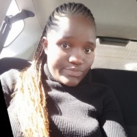

Quality Assurance Professional | Ensuring reliable systems, seamless user experiences, and structured digital solutions.
I am a detail-oriented and impact-driven professional with experience in both technology and community-focused initiatives. Over the past two years, I have worked in technology environments ensuring systems function effectively, identifying gaps, documenting processes, and collaborating with teams to improve user experience. This strengthened my analytical thinking, structured problem-solving approach, and ability to communicate clearly across different stakeholders.
Alongside my technical background, I have worked directly with children through literacy initiatives at Watoto Wasome, where I supported young learners in structured and encouraging environments. Combined with my customer support experience — where I handled user concerns with empathy and professionalism; these experiences have equipped me with the patience, clarity, and leadership mindset needed to contribute meaningfully to digital literacy programs at TechLit Africa.
For the past two years, I have volunteered with Watoto Wasome, supporting children in underserved communities through foundational literacy programs. This experience has strengthened my leadership, mentorship, and commitment to improving early learning outcomes.
This role has strengthened my communication skills, patience, and structured approach to mentorship while deepening my understanding of the educational gaps affecting underserved communities. It has reinforced my commitment to fostering growth, building confidence in young learners, and contributing to meaningful, community-driven impact.
Over the past two years, I have worked extensively in Quality Assurance within technology-driven environments, ensuring systems are reliable, functional, and user-friendly. My role has required both technical precision and strong communication skills to bridge the gap between users and development teams.
This combination of QA and customer support experience has strengthened my analytical thinking, attention to detail, problem-solving abilities, and capacity to support both users and teams effectively.
As a future School Lead Educator, I aspire to integrate structure, empathy, and innovation to strengthen digital literacy programs and empower learners in underserved communities.